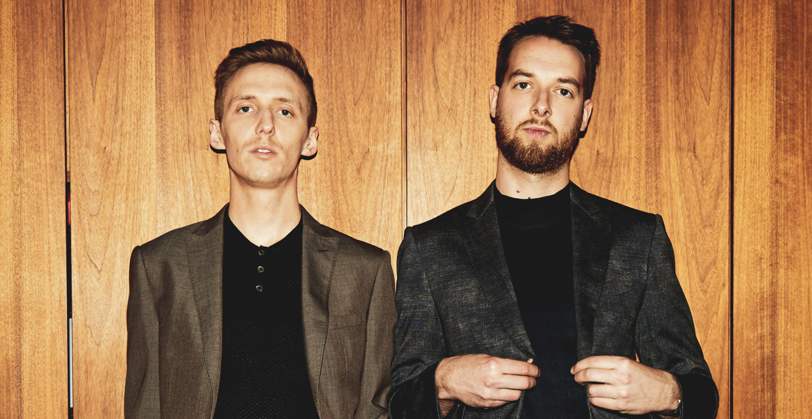
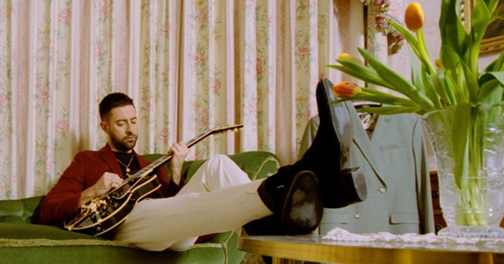

The first Friday night each month at JavaJam is a special night. Join us from 8 pm to 11 pm for some music you won't want to miss!
 Taking their name from the Japanese concept of "true feelings" and one's intimate self, British duo HONNE combine soul with synths to convey their vision of musical intimacy.
 Britain's Bruno Major splices classic singer/songwriter confessionals with sleek modern electronic production, girding the entire enterprise with hints of soul.